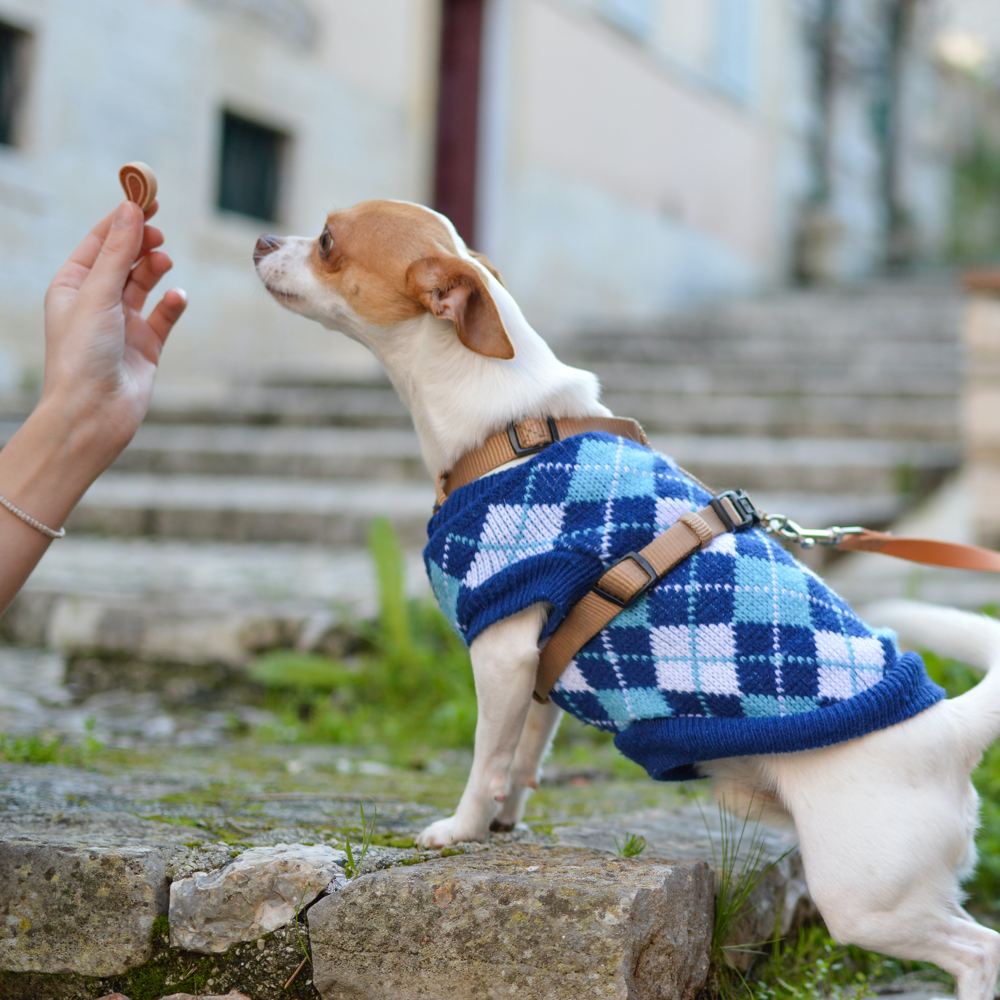
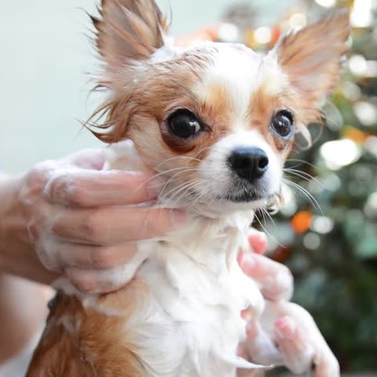
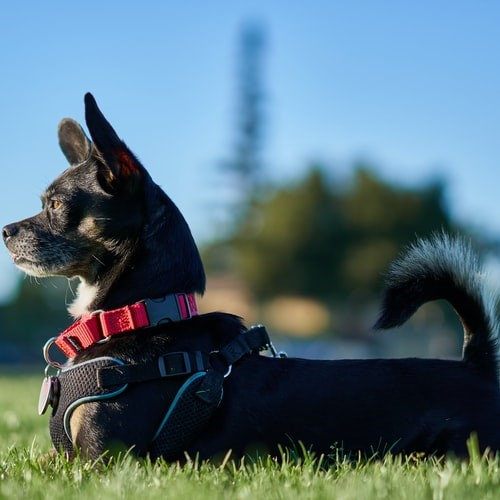
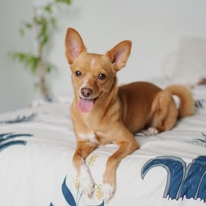
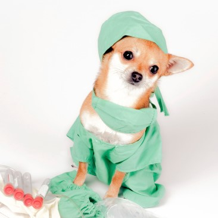

Care Guide
Nutrition
In terms of Chihuahuas, all care elements are very important to maintain good health, but the most important is feeding and diet. Chihuahuas should be fed a high-quality dog food fit to the dogs age and if not dog food the breed does well with real meats such as chicken, lamb, or fish. Vegetables and fruit such as potatoes, peas, carrots, berries, and bananas should also be implemented into their healthy diet in addition to their meals. Some Chihuahuas are known to be overweight so keep a close eye on calories and weight. To learn more, please visit Chewy Pet Central.
| Weight of Dog | Amount per Day |
|---|---|
| lbs | Cups |
| 1 | 1/8 - 1/6 |
| 3 | 1/4 - 3/8 |
| 5 | 3/8 - 1/2 |
| 10 | 3/4 - 7/8 |
| 15 | 1 - 1 1/4 |

Grooming
The two coat types of the Chihuahua each have different grooming requirements. The short-hair (smooth-coat) Chihuahua is low maintenance as they only require minimum brushing and regular bathing. The long-haired chihuahua should be brushed weekly and bathrd thoroughly to ensure their coat is clean. Both types requirer regular nail trimming, and teeth brushing. Due to Chihuahuas large and opened ears it is best to check them weekly and clean any visible wax or debri. Also it is best with any dog to check for paw injuries or cuts routinely.

Exercise
Chihuahuas love to run around and play, and due to their small size this requires very little space and effort. Daily or weekly walks depending upon the dogs health and age will be enough to make sure the dog gets necessary exercise, but sure not to overwork the Chihuahua. Keep an eye out for a dog panting or having trouble keeping up, if this occurs the dog needs rest and to be hydrated.

Training
Chihuahuas are a very intelligent breed, and are very aware of their surroundings. The are very loyal companions and seek to please, so positive reinforcement along with firm and proper training will yield desired results. As mentioned Chihuahuas are very intelligent, so they are also great at learning to get their way. If this occurs be sure to let the dog know you are in charge. When it comes to potty training maintain a tight schedule for when the dog should be let out every few hours. Though, Chihuahuas are able to hold their needs for about 9 hours without difficulty. To learn more on how to train your Chihuahua, please visit Chifriends.

Health
Chihuahuas are primarily healthy dogs, there are only few genetic issues that may affect the breed. Be sure to provide deworming medication to your Chihuahua regulary, otherwise parasites may bring upon discomfort and even put your dogs life in danger. It's easiest to make a visit to the vet, but it can be done at home as well. Chihuahuas should also be vaccinated. To see more about vaccinations, please visit the American Kennel Club.